Prevenția și screeningul în cabinetul medicului de familie: urmărirea sarcinii și a copilului, riscul cardiovascular, consilierea pacientului și dispensarizarea
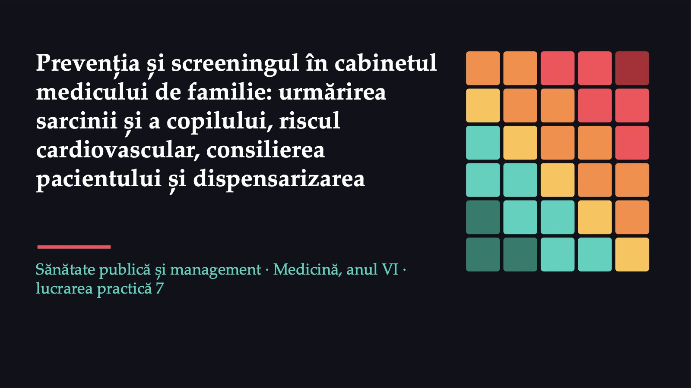
1 / 44Bună ziua. Lucrarea de azi este o consultație preventivă a medicului de familie, făcută de fiecare dintre voi pe un pacient real, cel pe care l-ați adus din stagiu.
Azi sunteți medicul de familie, într-o consultație preventivă
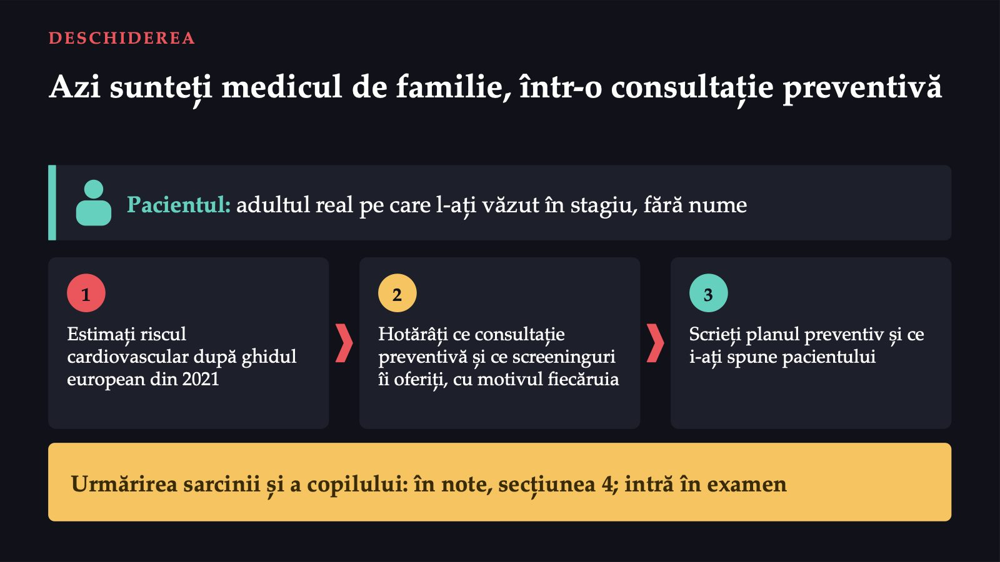
2 / 44Lucrarea de față nu folosește niciun pacient construit. Fiecare dintre voi a adus un adult văzut în stagiu, fără nume, și face pentru el ce face medicul de familie într-o consultație preventivă: estimează riscul cardiovascular după ghidul european, hotărăște ce screeninguri îi recomandă și de ce, scrie planul preventiv și formulează ce i-ar spune pacientului. Titlul lucrării cuprinde și urmărirea sarcinii și a copilului. În sală lucrăm pe adult, dar sarcina și copilul fac parte din aceeași consultație preventivă a medicului de familie: calendarele lor sunt în note, la secțiunea 4, și intră în examen.
Ce cere fișa disciplinei
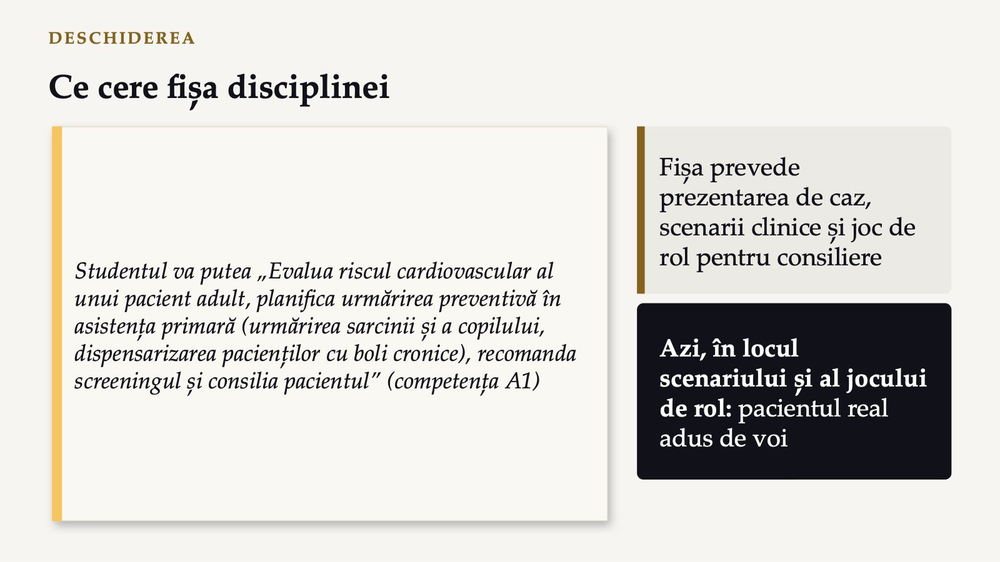
3 / 44Fișa disciplinei formulează astfel competența urmărită de această lucrare: evaluarea riscului cardiovascular al unui pacient adult, planificarea urmăririi preventive în asistența primară, inclusiv urmărirea sarcinii și a copilului și dispensarizarea pacienților cu boli cronice, recomandarea screeningului și consilierea pacientului. Pentru această lucrare, fișa prevede prezentarea de caz, rezolvarea de probleme pe scenarii clinice și jocul de rol pentru consilierea pacientului. Azi, în locul scenariului și al jocului de rol, lucrați pe pacientul real.
Foaia voastră rămâne la voi
![DESCHIDEREA Foaia voastră rămâne la voi Nu scrieți: numele, inițialele, codul numeric personal, secția, salonul, data internării sau a consultației, localitatea Scrieți numai ce îi trebuie medicului de familie: vârsta și sexul, fumatul, tensiunea sistolică, colesterolul cu unitatea din buletin, bolile care schimbă riscul, sarcina, greutatea și înălțimea, istoricul familial, datele pentru screening O dată care lipsește se scrie „lipsește”: medicul de familie ar cere-o Foaia nu se predă și se distruge după lucrare](diapozitive/LP07/004.jpg) 4 / 44
4 / 44Înainte de orice, uitați-vă pe foaia voastră. Pe ea nu trebuie să existe numele, inițialele, codul numeric personal, secția, salonul, data internării sau a consultației, localitatea ori alt element după care cineva l-ar putea recunoaște pe pacient. Dacă ați notat așa ceva, ștergeți acum. Pe foaie rămân numai datele de care are nevoie medicul de familie pentru riscul cardiovascular și pentru screening. Dacă o dată lipsește din foaia de observație, scrieți „lipsește” și nu o completați din presupuneri: ce lipsește face parte din plan, pentru că medicul de familie ar cere-o.
Ce intră în formularul fișei
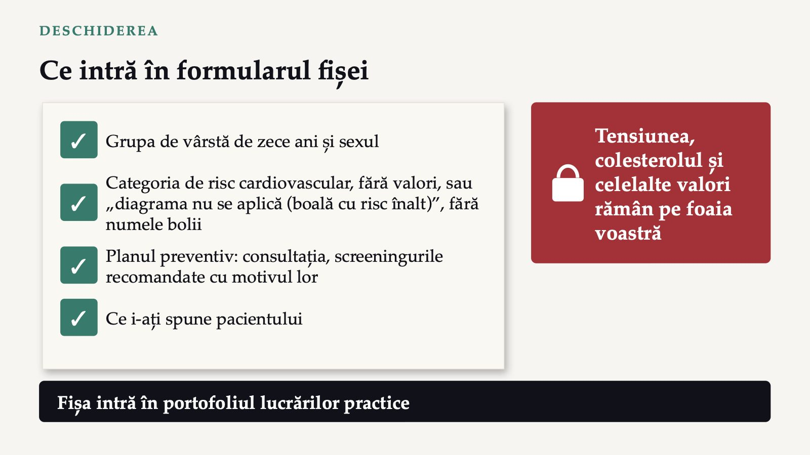
5 / 44În formularul fișei de lucru se predau numai acestea: vârsta pe grupe de zece ani și sexul; categoria de risc cardiovascular la care ați ajuns, fără valori, sau, dacă diagrama nu se aplică, mențiunea „diagrama nu se aplică (boală cu risc înalt)”, fără numele bolii; planul preventiv; screeningurile recomandate, cu motivul lor; ce i-ați spune pacientului. Tensiunea, colesterolul și celelalte valori rămân pe foaia voastră. Fișa intră în portofoliul lucrărilor practice.
Cum lucrăm azi
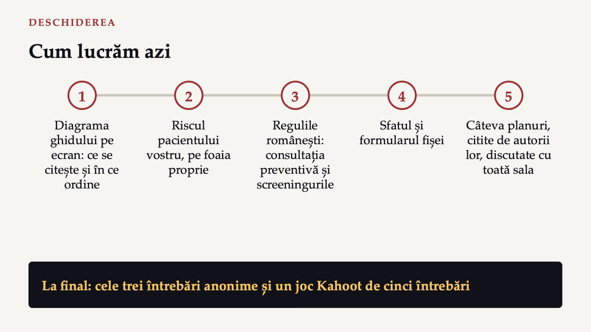
6 / 44Lucrarea durează două ore și fiecare lucrează individual, pe pacientul lui. Întâi urmărim diagrama ghidului și ordinea în care se citește. Estimați apoi riscul pacientului vostru, pe foaie. Urmează regulile românești: ce consultație preventivă îi oferă medicul de familie și ce screeninguri îi recomandă. Scrieți apoi planul și sfatul în formularul fișei. La sfârșit, câteva planuri se citesc și se discută cu toată sala; telefonul se folosește pe parcurs numai pentru opinii și întrebări anonime. Încheiem cu cele trei întrebări de final și cu un joc Kahoot.
Pasul 1. Diagrama ghidului european din 2021
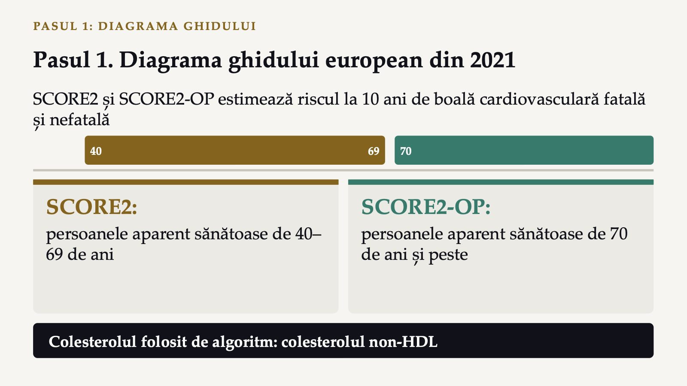
7 / 44Diagramele SCORE2 estimează riscul la 10 ani de boală cardiovasculară fatală și nefatală. Ghidul european de prevenție din 2021, cel din bibliografia fișei, folosește SCORE2 la persoanele aparent sănătoase de 40–69 de ani și SCORE2-OP la cele de 70 de ani și peste. Colesterolul folosit de algoritm este colesterolul non-HDL.
Primul pas: se aplică diagrama?
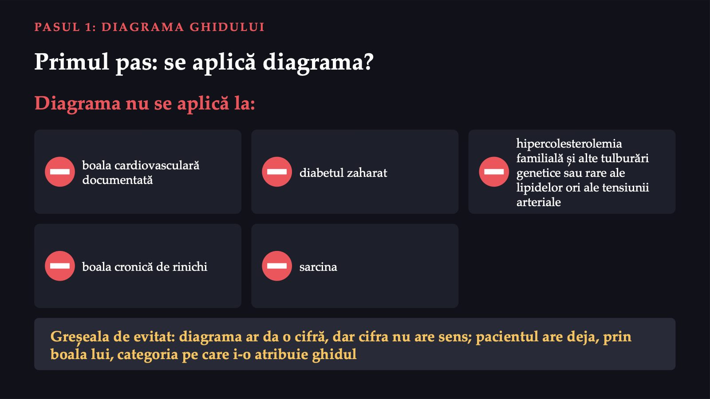
8 / 44Primul pas nu este citirea diagramei, ci întrebarea dacă ea se aplică. Diagramele SCORE2 nu se aplică persoanelor cu boală cardiovasculară documentată sau cu alte afecțiuni cu risc înalt: diabetul zaharat, hipercolesterolemia familială și alte tulburări genetice sau rare ale lipidelor ori ale tensiunii arteriale, boala cronică de rinichi; nu se aplică nici femeilor însărcinate. Greșeala de evitat este aplicarea diagramei unui pacient cu diabet, cu infarct în antecedente, cu boală cronică de rinichi sau cu hipercolesterolemie familială. Diagrama ar da o cifră, dar cifra nu are sens: pacientul are deja, prin boala lui, categoria pe care i-o atribuie ghidul, de cele mai multe ori risc înalt sau foarte înalt.
Când diagrama nu se aplică: categoria o dă ghidul
![PASUL 1: DIAGRAMA GHIDULUI Când diagrama nu se aplică: categoria o dă ghidul Boala cardiovasculară aterosclerotică documentată: în medie, risc foarte înalt de evenimente recurente, dacă factorii de risc nu sunt tratați Diabetul zaharat: risc înalt la cei mai mulți; foarte înalt la afectarea severă a organelor-țintă; moderat la diabetul bine controlat, de scurtă durată (de exemplu sub 10 ani), fără afectare de organ-țintă și fără alți factori de risc Sarcina: diagrama nu se aplică; planul spune numai acest motiv Boala cronică de rinichi, fără diabet și fără boală aterosclerotică: înalt în forma moderată, foarte înalt în forma severă Forma moderată: rata de filtrare glomerulară estimată de 30–44 ml/min/1,73 m² cu raportul albumină/creatinină sub 30 mg/g, de 45–59 cu raportul de 30–300 mg/g sau de cel puțin 60 cu raportul peste 300 mg/g; forma severă: rata sub 30 sau de 30–44 cu raportul peste 30 mg/g Hipercolesterolemia familială: risc înalt](diapozitive/LP07/009.jpg) 9 / 44
9 / 44Pentru acești pacienți, riscul se judecă altfel: ghidul le atribuie categoria de risc fără diagramă. Dacă pacientul vostru se află într-una dintre aceste situații, scrieți în plan de ce nu ați folosit diagrama și ce categorie de risc îi atribuie ghidul. Boala aterosclerotică documentată înseamnă, în medie, un risc foarte înalt de evenimente recurente dacă factorii de risc nu sunt tratați. Diabetul înseamnă risc înalt la cei mai mulți pacienți, foarte înalt la afectarea severă a organelor-țintă, iar diabetul bine controlat, de scurtă durată, fără afectare de organ-țintă și fără alți factori de risc, poate fi considerat cu risc moderat. Boala cronică de rinichi dă risc înalt în forma moderată și foarte înalt în forma severă; formele se deosebesc după rata de filtrare glomerulară estimată și după raportul albumină/creatinină urinară. Hipercolesterolemia familială dă risc înalt. La sarcină, diagrama nu se aplică, iar planul spune numai acest motiv. Sarcina: diagrama nu se aplică
Diagrama României: regiunea cu risc foarte înalt
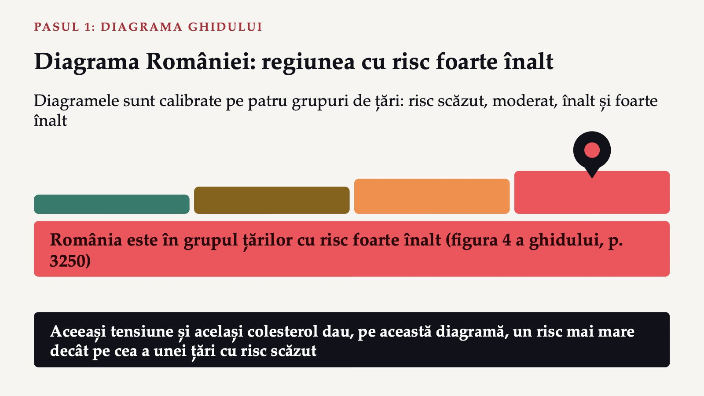
10 / 44Cele două diagrame sunt calibrate pe patru grupuri de țări, după riscul cardiovascular: scăzut, moderat, înalt și foarte înalt. România este trecută în grupul țărilor cu risc foarte înalt. Diagrama potrivită pentru un pacient din România este, deci, cea a regiunii cu risc foarte înalt; aceeași tensiune și același colesterol dau un risc mai mare pe această diagramă decât pe cea a unei țări cu risc scăzut.
Ce se citește, în ce ordine
![PASUL 1: DIAGRAMA GHIDULUI Ce se citește, în ce ordine Figura 3 a ghidului, p. 3246, diagrama regiunii cu risc foarte înalt 1 Pacientul este aparent sănătos? (fără boala cardiovasculară, diabetul, boala cronică de rinichi, hipercolesterolemia familială sau sarcina) 2 Diagrama, după vârstă: SCORE2 la 40–69 de ani, SCORE2-OP la 70 de ani și peste 3 Regiunea: pentru România, cea cu risc foarte înalt 4 Panoul, după sex și fumat; apoi rândul vârstei celei mai apropiate (aproape de grupa următoare, estimarea se ajustează în sus) 5 Celula: colesterolul non-HDL și tensiunea sistolică cele mai apropiate de ale pacientului; procentul din celulă 6 Categoria: procentul încadrat după vârstă](diapozitive/LP07/011.jpg) 11 / 44
11 / 44Explicația se face pe diagrama ghidului, nu pe un pacient. Verificați întâi că pacientul este aparent sănătos. Alegeți apoi diagrama după vârstă: SCORE2 la 40–69 de ani, SCORE2-OP la 70 de ani și peste. Pentru România, alegeți regiunea cu risc foarte înalt. Alegeți panoul după sex și după fumat, apoi rândul vârstei celei mai apropiate; dacă pacientul se apropie de grupa de vârstă următoare, estimarea se ajustează în sus. În acest rând, găsiți coloana colesterolului non-HDL și rândul tensiunii sistolice cele mai apropiate de valorile pacientului și citiți procentul din celulă. Încadrați la sfârșit procentul în categoria de risc potrivită vârstei. 5. Celula: procentul din celulă
Înainte de celulă: unitatea colesterolului
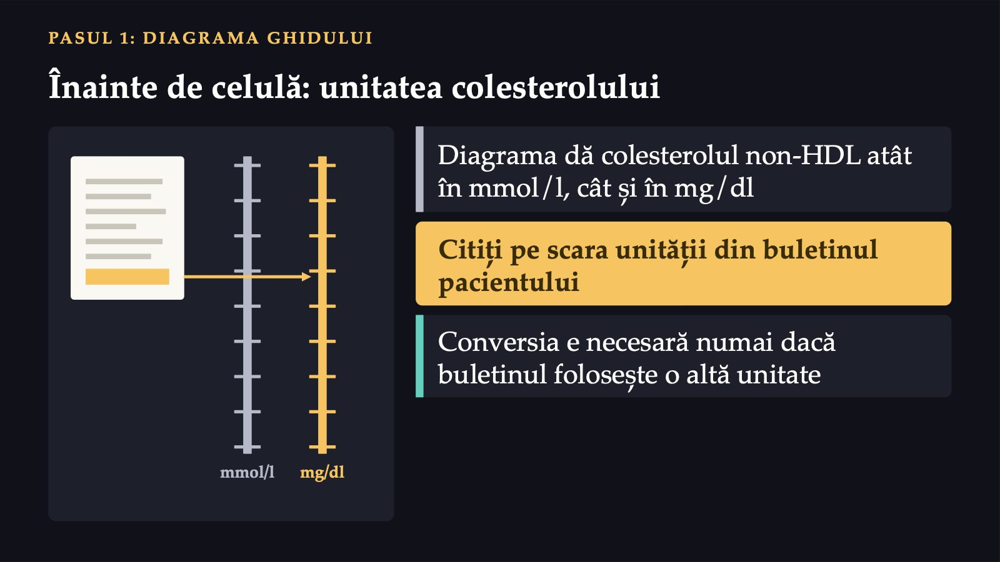
12 / 44Înainte de a citi celula, verificați unitatea de măsură a colesterolului în buletinul pacientului. Diagrama dă colesterolul non-HDL atât în milimoli pe litru, cât și în miligrame pe decilitru: citiți pe scara unității din buletin; conversia este necesară numai dacă buletinul folosește o altă unitate.
Același procent, altă categorie la altă vârstă
![PASUL 1: DIAGRAMA GHIDULUI Același procent, altă categorie la altă vârstă Sursa: tabelul 5 al ghidului european din 2021, p. 3251 Lângă pragul de vârstă: o anumită flexibilitate Sub 50 de ani: scăzut spre moderat sub 2,5% · înalt de la 2,5% până la sub 7,5% · foarte înalt de la 7,5% 2,5% 7,5% 50–69 de ani: scăzut spre moderat sub 5% · înalt de la 5% până la sub 10% · foarte înalt de la 10% 5% 10% 70 de ani și peste: scăzut spre moderat sub 7,5% · înalt de la 7,5% până la sub 15% · foarte înalt de la 15% 7,5% 15%](diapozitive/LP07/013.jpg) 13 / 44
13 / 44Același procent nu înseamnă același lucru la orice vârstă. Ghidul fixează praguri care cresc cu vârsta: sub 50 de ani, riscul foarte înalt începe de la 7,5%; la 50–69 de ani, de la 10%; la 70 de ani și peste, de la 15%. Pentru că vârsta e continuă, iar grupele sunt trei, pragurile cresc în trepte; ghidul cere de aceea o anumită flexibilitate când pacientul se apropie de grupa de vârstă următoare. Sursa: tabelul 5 al ghidului european din 2021, p. 3251
Ce urmează fiecărei categorii
![PASUL 1: DIAGRAMA GHIDULUI Ce urmează fiecărei categorii Categoria nu duce automat la medicamente: modificatorii de risc, riscul pe viață, beneficiul, comorbiditățile, fragilitatea și preferințele pacientului Risc scăzut spre moderat: tratamentul factorilor de risc nu este, în general, recomandat Risc înalt: tratamentul trebuie luat în considerare Risc foarte înalt: tratamentul este, în general, recomandat La 70 de ani și peste: tratamentul care scade lipidele poate fi luat în considerare (recomandare mai slabă) Pentru oricine: oprirea fumatului, stilul de viață, tensiunea sistolică sub 160 mmHg](diapozitive/LP07/014.jpg) 14 / 44
14 / 44La riscul scăzut spre moderat, tratamentul factorilor de risc nu este, în general, recomandat; la riscul înalt, trebuie luat în considerare; la riscul foarte înalt, este, în general, recomandat. La persoanele de 70 de ani și peste, tratamentul care scade lipidele are o recomandare mai slabă: poate fi luat în considerare. Oricare ar fi categoria, oprirea fumatului, recomandările privind stilul de viață și o tensiune sistolică sub 160 mmHg sunt recomandate tuturor. Categoria nu duce automat la tratament medicamentos: modificatorii de risc, riscul pe viață, beneficiul tratamentului, comorbiditățile, fragilitatea și preferințele pacientului pot ghida decizia.
Pasul 2. Riscul pacientului vostru, pe foaia proprie
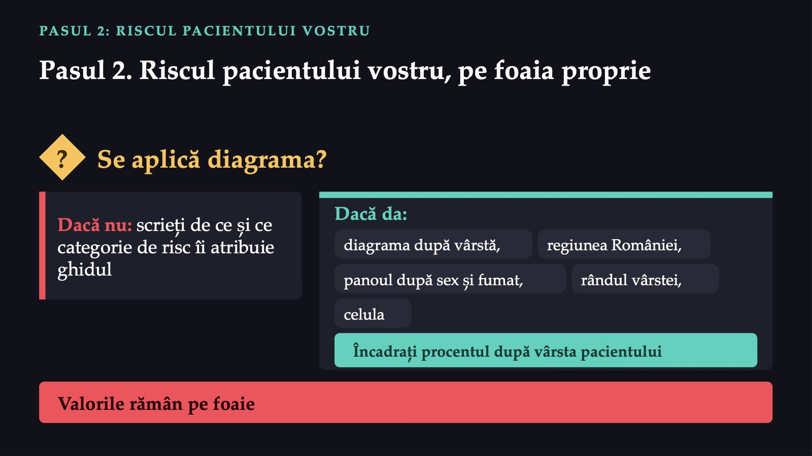
15 / 44Lucrați acum pe pacientul vostru, pe foaia proprie. Verificați întâi dacă diagrama se aplică. Dacă se aplică, citiți celula și încadrați pacientul după vârstă. Dacă nu se aplică, scrieți de ce și ce categorie de risc îi atribuie ghidul. Valorile rămân pe foaie.
Pasul 3. Regulile românești
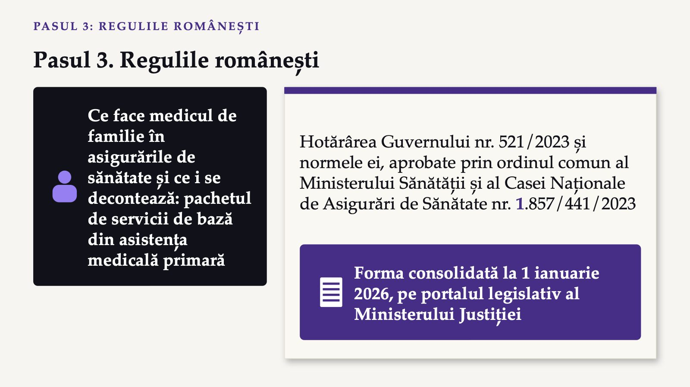
16 / 44Diagrama vă dă categoria de risc. Ce poate face medicul de familie în cadrul asigurărilor de sănătate și ce i se decontează este stabilit în pachetul de servicii de bază din asistența medicală primară, în normele de aplicare a Hotărârii Guvernului nr. 521/2023. Notele urmează forma consolidată a normelor la 1 ianuarie 2026, ultima din istoricul portalului legislativ la data consultării.
Adultul asimptomatic, fără boală cronică în evidență: 18–39 de ani
![PASUL 3: REGULILE ROMÂNEȘTI Adultul asimptomatic, fără boală cronică în evidență: 18–39 de ani Femeia care planifică o sarcină: și senologia imagistică, examenul Babeș-Papanicolau la 2 ani, testul VDRL sau RPR (pentru sifilis) Consultația este anuală: medicul evaluează expunerea la factorii de risc și completează riscograma pentru grupa de vârstă și sex Se decontează cel mult două consultații pe an; a doua, intervenția individuală asupra riscurilor modificabile, în cel mult 90 de zile de la prima Analizele recomandate: hemoleucograma completă, viteza de sedimentare a hematiilor (VSH), glicemia, colesterolul total, LDL-colesterolul, creatinina serică cu rata de filtrare glomerulară estimată, transaminazele, raportul albumină/creatinină urinară](diapozitive/LP07/017.jpg) 17 / 44
17 / 44Consultațiile preventive de evaluare a riscului individual se acordă activ, la cabinet, adulților asimptomatici pe care medicul de familie nu îi are în evidență pentru vreo boală cronică. Pentru cei de 18–39 de ani, consultația este anuală: medicul evaluează expunerea la factorii de risc și completează riscograma pentru grupa de vârstă și sex. Se decontează cel mult două consultații pe an, iar a doua, cea a intervenției individuale asupra riscurilor modificabile, se acordă în cel mult 90 de zile de la prima. Lista analizelor recomandate pentru prevenție o vedeți pe ecran; pentru femeia de 18–39 de ani care planifică o sarcină, ea cuprinde și senologia imagistică, examenul Babeș-Papanicolau la 2 ani și testul pentru sifilis.
Adultul asimptomatic de peste 40 de ani
![PASUL 3: REGULILE ROMÂNEȘTI Adultul asimptomatic de peste 40 de ani Limita de vârstă nu e scrisă la fel: pachetul, „peste 40 de ani”; lista analizelor, „40 de ani și peste” Anual, un pachet de prevenție de 1–3 consultații: evaluarea inițială, intervenția individuală asupra riscurilor modificabile, controlul, în cel mult 6 luni consecutive Odată cu raportarea serviciului se transmit: tensiunea arterială, indicele de masă corporală, istoricul familial de deces cardiovascular prematur sau de boli familiale ale lipidelor, statutul de fumător Analizele: aceleași ca la 18–39 de ani, la care se adaugă antigenul specific prostatic (PSA) la bărbați și, la femei, senologia imagistică, hormonul tireostimulant (TSH) și tiroxina liberă (FT4)](diapozitive/LP07/018.jpg) 18 / 44
18 / 44Pentru cei de peste 40 de ani se decontează anual un pachet de prevenție de 1–3 consultații: evaluarea inițială, intervenția individuală asupra riscurilor modificabile și controlul, într-un interval de cel mult 6 luni consecutive. Tensiunea arterială, indicele de masă corporală, istoricul familial de deces prematur prin boală cardiovasculară sau de boli familiale ale metabolismului lipidic și statutul de fumător se transmit odată cu raportarea serviciului, pentru validarea lui. Analizele recomandate de la 40 de ani sunt cele de la 18–39 de ani, la care se adaugă antigenul specific prostatic la bărbați și, la femei, senologia imagistică și testele tiroidiene. Observați că limita de vârstă nu este scrisă la fel în cele două locuri. Limita de vârstă nu e scrisă la fel: lista analizelor, „40 de ani și peste”
Riscograma: documentul consultației preventive
 19 / 44
19 / 44Riscograma este documentul consultației preventive. Pentru adultul de 40 de ani și peste, ea cuprinde evaluarea stilului de viață, a riscului cardiovascular, a riscului oncologic și a riscului de boală cronică de rinichi. Stilul de viață se evaluează prin fumat, în pachete-an, consumul problematic de alcool, cu un chestionar standardizat, activitatea fizică, dieta și indicele de masă corporală și sănătatea orală, iar consultația se încheie cu un sfat minimal pentru schimbarea comportamentelor.
Riscograma: riscul cardiovascular
![PASUL 3: REGULILE ROMÂNEȘTI Riscograma: riscul cardiovascular Normele cer diagramele SCORE din programul european HeartScore: riscul de eveniment cardiovascular fatal în următorii 10 ani 5% În monitorizarea activă intră pacienții cu SCORE de cel puțin 5% sau cu valori înalte ale unui singur factor de risc Colesterolul total: la bărbații de peste 40 de ani și la femeile de peste 50 de ani sau după menopauză; se repetă la 5 ani la riscul normal Glicemia: la tensiune peste 140/90 mmHg, la indice de masă corporală peste 30 sau la istoric familial de boală cardiovasculară prematură ori de boli familiale ale lipidelor Creatinina cu rata de filtrare estimată: la toți cei cu tensiune peste 140/90 mmHg](diapozitive/LP07/020.jpg) 20 / 44
20 / 44Pentru riscul cardiovascular, normele cer folosirea diagramelor SCORE din programul european HeartScore, care estimează riscul de eveniment cardiovascular fatal în următorii 10 ani, și includerea în monitorizarea activă a pacienților cu SCORE de cel puțin 5% sau cu valori înalte ale unui singur factor de risc. Colesterolul total se măsoară la bărbații de peste 40 de ani și la femeile de peste 50 de ani sau după menopauză și se repetă la 5 ani la persoanele cu risc normal. Glicemia se cere la tensiune peste 140/90 mmHg, la indice de masă corporală peste 30 sau la istoric familial de boală cardiovasculară prematură ori de boli familiale ale lipidelor, iar creatinina cu rata de filtrare estimată, la toți cei cu tensiune peste 140/90 mmHg.
Două reguli, două scări
![PASUL 3: REGULILE ROMÂNEȘTI Două reguli, două scări În plan: categoria de risc o dă ghidul; consultația, intrarea în monitorizarea activă și nivelul de risc al normelor le dau normele Ghidul european: SCORE2, evenimente fatale și nefatale, cu praguri pe vârste Normele românești: diagramele SCORE ale riscului fatal; SCORE de cel puțin 5% în riscogramă duce la monitorizarea activă 5% SCORE 10% SCORE2 Scările nu se suprapun: la 50–69 de ani, pragul de 5% al vechiului SCORE corespunde, în medie, pragului de 10% al SCORE2](diapozitive/LP07/021.jpg) 21 / 44
21 / 44Observați diferența dintre cele două reguli pe care le aplicați. Ghidul european din fișă folosește SCORE2, care estimează evenimentele fatale și nefatale, cu praguri pe vârste; normele românești vorbesc de diagramele SCORE ale riscului fatal. În riscogramă, un SCORE de cel puțin 5% duce la includerea în monitorizarea activă, iar acolo normele încadrează pacientul într-unul dintre patru niveluri de risc. Cele două scări nu se suprapun: la 50–69 de ani, pragul de 5% al vechiului SCORE, care numără decesele cardiovasculare la 10 ani, corespunde, în medie, pragului de 10% al SCORE2, care numără și evenimentele nefatale. Planul vostru le respectă pe amândouă.
Nivelurile de risc ale normelor, în monitorizarea activă
![PASUL 3: REGULILE ROMÂNEȘTI Nivelurile de risc ale normelor, în monitorizarea activă Sursa: normele pachetelor de servicii, anexa 1, litera B, punctul 1.1.4.2 Scăzut: SCORE sub 1%; tensiune normală sau cel mult hipertensiune de gradul 1 Moderat: SCORE de cel puțin 1% și sub 5%; hipertensiune de gradul 2; pacienți tineri cu diabet (de tip 1 sub 35 de ani, de tip 2 sub 50 de ani), cu durata diabetului sub 10 ani și fără alți factori de risc Înalt: SCORE de 5% și sub 10%; un singur factor de risc foarte crescut (trigliceride peste 310 mg/dl, LDL-colesterol peste 190 mg/dl, tensiune de cel puțin 180/110 mmHg); hipercolesterolemie familială fără alți factori majori; diabet fără afectare de organ-țintă, de cel puțin 10 ani sau cu alt factor de risc; boală cronică de rinichi moderată (rata de filtrare 30–59 ml/min/1,73 m²) Foarte înalt: SCORE de cel puțin 10%; boală cardiovasculară aterosclerotică documentată clinic sau imagistic; diabet cu afectare de organ-țintă, cu cel puțin 3 factori majori sau de tip 1 cu debut precoce și durată de peste 20 de ani; boală cronică de rinichi severă (rata de filtrare sub 30 ml/min/1,73 m²); hipercolesterolemie familială cu boală aterosclerotică sau cu alt factor major](diapozitive/LP07/022.jpg) 22 / 44
22 / 44În monitorizarea activă, normele încadrează pacientul într-unul dintre aceste patru niveluri de risc: scăzut, moderat, înalt și foarte înalt. Pragurile SCORE ale normelor sunt 1%, 5% și 10%, ale riscului fatal la 10 ani; în aceleași niveluri intră și hipertensiunea după grad, diabetul după vârstă, durată și afectarea organelor-țintă, boala cronică de rinichi după rata de filtrare și hipercolesterolemia familială. Înalt: un singur factor de risc foarte crescut (trigliceride peste 310 mg/dl, LDL-colesterol peste 190 mg/dl, tensiune de cel puțin 180/110 mmHg) Înalt: hipercolesterolemie familială fără alți factori majori Foarte înalt: diabet cu afectare de organ-țintă, cu cel puțin 3 factori majori sau de tip 1 cu debut precoce și durată de peste 20 de ani Moderat: pacienți tineri cu diabet (de tip 1 sub 35 de ani, de tip 2 sub 50 de ani), cu durata diabetului sub 10 ani și fără alți factori de risc Înalt: diabet fără afectare de organ-țintă, de cel puțin 10 ani sau cu alt factor de risc Foarte înalt: hipercolesterolemie familială cu boală aterosclerotică sau cu alt factor major
Cine nu primește riscograma și ce primește în schimb
![PASUL 3: REGULILE ROMÂNEȘTI Cine nu primește riscograma și ce primește în schimb Riscograma exclude persoanele cu risc deja crescut: boala cardiovasculară cunoscută, diabetul de tip 2 sau de tip 1 cu microalbuminurie, boala cronică de rinichi, valorile deja cunoscute, foarte înalte, ale unui factor de risc; ele intră în monitorizarea activă a bolilor cronice Pacientul cu boală cronică în evidență primește alte consultații preventive: Între 40 și 60 de ani: depistarea precoce a riscurilor modificabile ale altor boli cu pondere mare (cardiovasculare și metabolice, cancerul, boala cronică de rinichi, sănătatea mintală, sănătatea reproducerii) După 60 de ani: stilul de viață, riscul cardiovascular fatal, riscul oncologic, riscul de boală cronică de rinichi, sănătatea mintală, inclusiv depresia, riscul de osteoporoză, de incontinență urinară, de melanom și de demență](diapozitive/LP07/023.jpg) 23 / 44
23 / 44Riscograma exclude persoanele care au deja un risc crescut: cele cu boală cardiovasculară cunoscută, cu diabet zaharat de tip 2 sau de tip 1 cu microalbuminurie, cu boală cronică de rinichi ori cu valori deja cunoscute, foarte înalte, ale unui factor de risc; ele intră în monitorizarea activă a bolilor cronice. Pacientul care este deja în evidența medicului de familie cu o boală cronică nu primește consultația adultului asimptomatic, ci alte consultații preventive. Între 40 și 60 de ani, consultația de depistare precoce caută riscurile modificabile ale altor boli cu pondere mare în povara îmbolnăvirilor. După 60 de ani, consultația evaluează, pe lângă riscurile de mai înainte, sănătatea mintală, inclusiv depresia, și riscul de osteoporoză, de incontinență urinară, de melanom și de demență.
Dispensarizarea, azi: monitorizarea activă
![PASUL 3: REGULILE ROMÂNEȘTI Dispensarizarea, azi: monitorizarea activă Numele din norme: „Consultații de monitorizare activă prin plan de management integrat pe bază de programare” Bolile: riscul cardiovascular înalt (hipertensiunea arterială, dislipidemia, boala cronică de rinichi, diabetul zaharat de tip 2), astmul bronșic, bronhopneumopatia cronică obstructivă Evaluarea inițială a cazului nou depistat: până la trei consultații, în cel mult 3 luni consecutive Monitorizarea: două consultații programate în cel mult 3 luni; o nouă monitorizare după 6 luni consecutive Planul de management: obiectivele clinice și intervențiile (fumatul, dieta, activitatea fizică, tensiunea, colesterolul și glicemia la valorile-țintă, educația pentru autoîngrijire)](diapozitive/LP07/024.jpg) 24 / 44
24 / 44În practica românească, luarea în evidență și urmărirea periodică, activă, a bolnavului cronic se numește dispensarizare. În normele de azi, serviciul se numește consultații de monitorizare activă prin plan de management integrat pe bază de programare. Ritmul este fixat: evaluarea inițială a cazului nou depistat poate cuprinde trei consultații în cel mult 3 luni consecutive, cu bilanțul clinic, screeningul complicațiilor, inițierea și ajustarea tratamentului și educația pacientului; monitorizarea cuprinde apoi două consultații programate în cel mult 3 luni, iar o nouă monitorizare se face după 6 luni consecutive. La evaluarea inițială a riscului cardiovascular, medicul evaluează afectarea organelor-țintă, stratifică riscul și stabilește planul de management.
Riscograma oncologică
![PASUL 3: SCREENINGURILE Riscograma oncologică Consemnează: cancerele la rudele de gradul întâi, expunerea profesională sau prin stilul de viață, testările de screening anterioare pentru cancerele din programele naționale Medicul include persoanele eligibile în programele de screening populațional Trimite la evaluare de specialitate persoanele cu risc înalt, de exemplu de cancer mamar, colorectal sau ovarian La riscul normal, intervenția scadentă: data ultimului test Babeș-Papanicolau, la femeile de 25–39 și de 40–64 de ani](diapozitive/LP07/025.jpg) 25 / 44
25 / 44Riscograma oncologică consemnează cancerele la rudele de gradul întâi, expunerea profesională sau prin stilul de viață și testările de screening anterioare pentru cancerele din programele naționale. Medicul include persoanele eligibile în programele de screening populațional și trimite la evaluare de specialitate persoanele cu risc înalt, de exemplu de cancer mamar, colorectal sau ovarian. Ca intervenție preventivă scadentă la populația cu risc normal, riscograma consemnează data ultimului test Babeș-Papanicolau la femeile de 25–39 de ani și la cele de 40–64 de ani.
Două screeninguri cu criterii scrise în norme
![PASUL 3: SCREENINGURILE Două screeninguri cu criterii scrise în norme 50 69 35 64 25 34 Testarea: la medicul de obstetrică-ginecologie; rezultatul se raportează programului național de screening pentru cancerul de col uterin Mamografia: femeile asimptomatice de 50–69 de ani, fără diagnostic confirmat de cancer mamar, o dată la 2 ani („examenul de depistare precoce a cancerului de sân”) Testarea pentru virusul papiloma uman (HPV): femeile asimptomatice de 35–64 de ani și cele de 25–34 de ani cu rezultat pozitiv la examenul citologic Rezultat pozitiv la 35–64 de ani: triaj citologic; rezultat negativ: se repetă peste 5 ani](diapozitive/LP07/026.jpg) 26 / 44
26 / 44Două screeninguri ale cancerului au, în norme, criterii de eligibilitate scrise. Mamografia de depistare precoce se adresează femeilor asimptomatice de 50–69 de ani fără diagnostic confirmat de cancer mamar și se face o dată la 2 ani. Testarea pentru virusul papiloma uman se adresează femeilor asimptomatice de 35–64 de ani, precum și celor de 25–34 de ani cu rezultat pozitiv la examenul citologic; un rezultat pozitiv la 35–64 de ani duce la triaj citologic, iar un rezultat negativ se repetă peste 5 ani. Testarea se face prin prezentare la medicul de obstetrică-ginecologie, iar rezultatul se raportează programului național de screening pentru cancerul de col uterin.
Strategia și serviciul efectiv
![PASUL 3: SCREENINGURILE Strategia și serviciul efectiv Vârstele din strategie și cele din norme nu coincid: planul urmează serviciul pe care pacienta îl poate primi efectiv, iar diferența se spune ca atare 2021–2023 2024 Cancerul colorectal: pilotul populațional din 2021–2023 a cuprins persoane de 50–74 de ani În 2024, Ministerul Sănătății a adoptat metodologii naționale pentru screeningul colorectal, cervical și mamar Strategia adoptată în 2024 (profilul de țară al Organizației pentru Cooperare și Dezvoltare Economică, 2025): testarea virală primară, cu triaj citologic, pentru femeile de 25–65 de ani, la cinci ani](diapozitive/LP07/027.jpg) 27 / 44
27 / 44Potrivit profilului de țară publicat în 2025 de Organizația pentru Cooperare și Dezvoltare Economică, strategia adoptată în 2024 prevede testarea virală primară, cu triaj citologic, pentru femeile de 25–65 de ani, la cinci ani. Vârstele din strategie și cele din norme nu coincid; planul vostru urmează serviciul pe care pacienta îl poate primi efectiv, iar diferența o spuneți ca atare. Pentru cancerul colorectal, pilotul populațional din 2021–2023 a cuprins persoane de 50–74 de ani; în 2024, Ministerul Sănătății a adoptat metodologii naționale pentru screeningul colorectal, cervical și mamar.
Diabetul și boala cronică de rinichi
![PASUL 3: SCREENINGURILE Diabetul și boala cronică de rinichi Diabetul: adulților de 18 ani și peste, fără simptome, supraponderali sau obezi ori cu factori de risc, glicemia a jeun, testul de toleranță la glucoză sau hemoglobina glicată, dacă nu le-au făcut în ultimele 6 luni Glicemia a jeun de 110–125 mg/dl, testul de toleranță de 140–199 mg/dl sau hemoglobina glicată de 5,7–6,49%: medicul de familie îl include în programul național de diabet și începe tratamentul cu metformin Boala cronică de rinichi: adulților de 18 ani și peste cu boli cardiovasculare, hipertensiune sau diabet, creatinina cu rata de filtrare estimată și raportul albumină/creatinină urinară, dacă nu le-au făcut în ultimele 6 luni Riscul mic: anual; riscul moderat: la 3 luni; riscul înalt: trimiterea la nefrolog](diapozitive/LP07/028.jpg) 28 / 44
28 / 44Pentru diabet, adulților de 18 ani și peste fără simptome, supraponderali sau obezi ori cu factori de risc, li se recomandă glicemia a jeun, testul de toleranță la glucoză sau hemoglobina glicată, dacă nu le-au făcut în ultimele 6 luni. Pacientul cu glicemie a jeun de 110–125 mg/dl, cu test de toleranță de 140–199 mg/dl sau cu hemoglobina glicată de 5,7–6,49% este inclus de medicul de familie în programul național de diabet și începe tratamentul cu metformin. Pentru boala cronică de rinichi, adulților de 18 ani și peste cu boli cardiovasculare, hipertensiune sau diabet li se recomandă creatinina cu rata de filtrare estimată și raportul albumină/creatinină urinară, dacă nu le-au făcut în ultimele 6 luni; la riscul mic se repetă anual, la riscul moderat la 3 luni, iar riscul înalt se trimite la nefrolog.
Ce nu intră de rutină în plan
![PASUL 3: SCREENINGURILE Ce nu intră de rutină în plan Un plan preventiv nu este o listă cu toate analizele posibile Dacă planul recomandă PSA: îi spune pacientului beneficiile și riscurile și îi lasă decizia Organizația Mondială a Sănătății: pentru cancerul pulmonar, de prostată, ovarian, tiroidian, gastric, hepatic, cutanat și oral, dovezile sunt insuficiente sau fezabilitatea trebuie încă evaluată Antigenul specific prostatic (PSA) figurează printre analizele recomandate bărbaților de 40 de ani și peste, iar dovezile pentru screeningul cancerului de prostată sunt insuficiente](diapozitive/LP07/029.jpg) 29 / 44
29 / 44Un plan preventiv nu este o listă cu toate analizele posibile. Organizația Mondială a Sănătății consideră că, pentru cancerul pulmonar, de prostată, ovarian, tiroidian, gastric, hepatic, cutanat și oral, dovezile sunt insuficiente sau fezabilitatea trebuie încă evaluată. Antigenul specific prostatic figurează printre analizele recomandate bărbaților de 40 de ani și peste, iar dovezile pentru screeningul cancerului de prostată sunt insuficiente. Dacă planul vostru recomandă testul, îi spune pacientului beneficiile și riscurile și îi lasă decizia, ca în decizia informată din cursul 5.
Pasul 3, pe foaia voastră
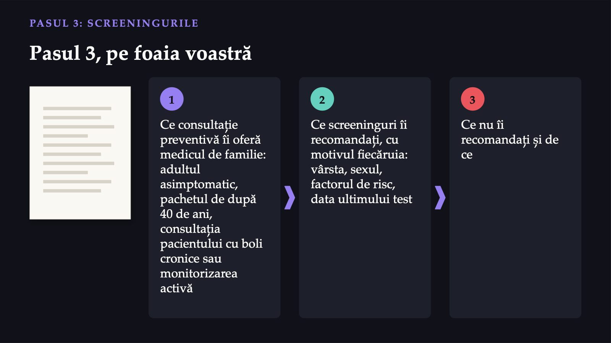
30 / 44Lucrați din nou pe pacientul vostru. Stabiliți ce consultație preventivă îi oferă medicul de familie după norme: consultația adultului asimptomatic, pachetul de prevenție de după 40 de ani, consultația pacientului cu boli cronice sau monitorizarea activă. Hotărâți ce screeninguri îi recomandați, cu motivul fiecăruia: vârsta, sexul, factorul de risc, data ultimului test. Scrieți și ce nu îi recomandați, cu motivul.
Pasul 4. Ce îi spuneți pacientului
![PASUL 4: SFATUL ȘI FORMULARUL Pasul 4. Ce îi spuneți pacientului Consultația preventivă a normelor se încheie cu un sfat minimal pentru schimbarea comportamentelor Oricui, indiferent de risc (ghidul european): oprirea fumatului, schimbarea stilului de viață, tensiunea sistolică sub 160 mmHg Un screening cu beneficiu incert: beneficiile și riscurile; decizia o ia pacientul Cursul 6: o schimbare de comportament cere capacitate, oportunitate și motivație Sfatul are patru părți: 1 riscul, în cuvinte, nu în procente fără reper; 2 una sau două schimbări prioritare, nu zece; 3 ce screeninguri face, de ce și unde; 4 când revine și ce se va verifica atunci](diapozitive/LP07/031.jpg) 31 / 44
31 / 44Planul nu este terminat până nu știți ce îi spuneți pacientului. Consultația preventivă a normelor are o parte de intervenție individuală asupra riscurilor modificabile și se încheie cu un sfat minimal pentru schimbarea comportamentelor. Ghidul european recomandă oricărui pacient, indiferent de risc, oprirea fumatului, schimbarea stilului de viață și o tensiune sistolică sub 160 mmHg. Ce spuneți trebuie să fie înțeles și făcut, nu doar corect. Cursul 6 a arătat că informația lucrează numai asupra a ce știe pacientul și că o schimbare de comportament cere și capacitate, și oportunitate, și motivație. De aceea, regula acestui curs este ca sfatul să aibă patru părți: ce risc are pacientul, spus în cuvinte; una sau două schimbări prioritare; ce screeninguri face, de ce și unde; când revine și ce se va verifica atunci. Pentru un screening cu beneficiu incert, sfatul prezintă beneficiile și riscurile și lasă decizia pacientului.
Formularul fișei de lucru: un singur pas
![PASUL 4: SFATUL ȘI FORMULARUL Formularul fișei de lucru: un singur pas FORMULAR (a) grupa de vârstă de zece ani și sexul pacientului (b) categoria de risc cardiovascular, fără valori, sau „diagrama nu se aplică (boală cu risc înalt)”, fără numele bolii (c) consultația preventivă pe care o oferă medicul de familie și ce urmează în ea (d) screeningurile recomandate, cu motivul fiecăruia, și ce nu recomandați, cu motivul (e) ce i-ați spune pacientului, în cel mult cinci rânduri Răspundeți pe telefon, la codul afișat. Contul UMF; valorile rămân pe foaie Forms contul UMF](diapozitive/LP07/032.jpg) 32 / 44
32 / 44Scrieți acum, în formularul fișei de lucru, pentru pacientul vostru, cu vârsta pe grupe de zece ani și sexul: categoria de risc, fără valori, sau mențiunea că diagrama nu se aplică; consultația preventivă și ce urmează în ea; screeningurile recomandate, cu motivul lor, și ce nu recomandați; ce i-ați spune pacientului, în cel mult cinci rânduri. Valorile rămân pe foaia voastră. Contul UMF; valorile rămân pe foaie
Pasul 5. Planurile voastre
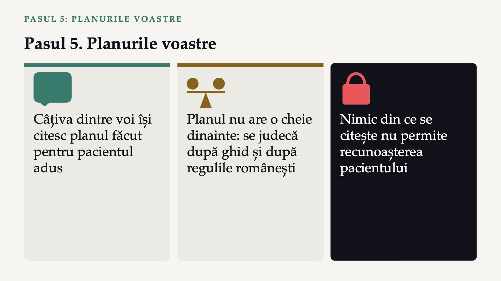
33 / 44Pe rând, cât permite timpul, câțiva dintre voi își citesc planul făcut pentru pacientul adus, iar sala îl judecă după criteriile pe care le-ați văzut în formular, după trimitere. Planul nu are o cheie dinainte: se judecă după ghid și după regulile românești.
Rezolvarea se vede în formularul fișei, după ce o predați.
Rezolvarea se vede în formularul fișei, după ce o predați.
Rezolvarea se vede în formularul fișei, după ce o predați.
Rezolvarea se vede în formularul fișei, după ce o predați.
Ce v-a fost cel mai greu de spus pacientului?
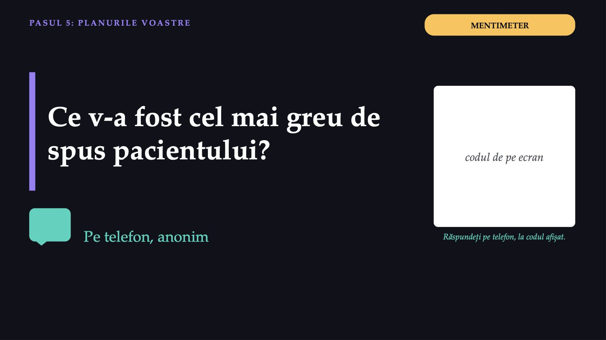
36 / 44Luați telefonul. Întrebarea este despre voi și nu are o variantă bună sau una rea: ce v-a fost cel mai greu de spus pacientului vostru?
Întrebările voastre, anonime
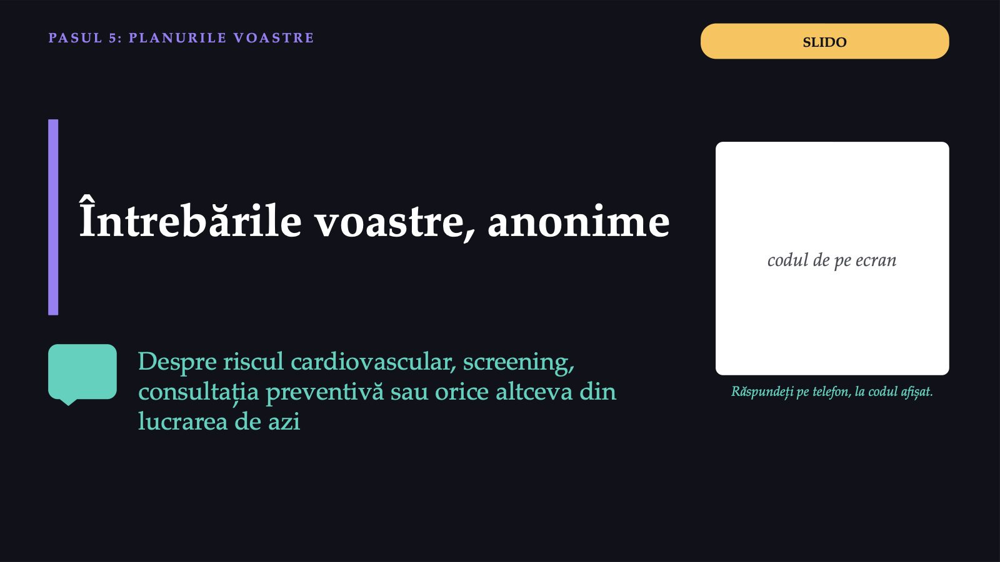
37 / 44Întrebările pe care le-ați trimis anonim pe telefon le citim acum.
Ce reținem
![FINALUL Ce reținem 1 Primul pas al estimării riscului: se aplică diagrama? Boala cardiovasculară documentată, diabetul, hipercolesterolemia familială, boala cronică de rinichi și sarcina o exclud 2 Pentru România, diagrama regiunii cu risc foarte înalt; SCORE2 la 40–69 de ani, SCORE2-OP la 70 de ani și peste 3 Același procent, altă categorie la altă vârstă: riscul foarte înalt începe la 7,5% sub 50 de ani, la 10% la 50–69 de ani și la 15% la 70 de ani și peste 4 Normele românești fixează consultația preventivă, riscograma și intrarea în monitorizarea activă, adică dispensarizarea de azi 5 Fiecare screening are motivul lui; testul cu dovezi insuficiente nu intră de rutină, iar dacă planul îl propune, decizia o ia pacientul 6 Sfatul are patru părți: riscul în cuvinte, una sau două schimbări prioritare, screeningurile cu motivul, data revenirii](diapozitive/LP07/038.jpg) 38 / 44
38 / 44Din lucrarea de azi rețineți șase lucruri. Primul pas este întrebarea dacă diagrama se aplică. Pentru un pacient din România se citește diagrama regiunii cu risc foarte înalt. Același procent înseamnă altă categorie la altă vârstă. Normele românești fixează ce consultație preventivă primește pacientul, ce se consemnează în riscogramă și când intră în monitorizarea activă. Fiecare screening din plan are motivul lui. Iar sfatul are patru părți. SCORE2 la 40–69 de ani, SCORE2-OP la 70 de ani și peste testul cu dovezi insuficiente nu intră de rutină, iar dacă planul îl propune, decizia o ia pacientul Sfatul are patru părți: riscul în cuvinte, una sau două schimbări prioritare, screeningurile cu motivul, data revenirii
Trei întrebări de final, anonime
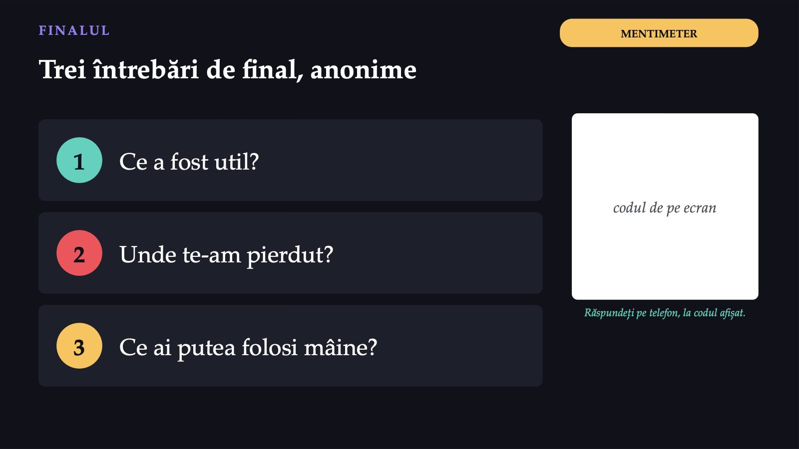
39 / 44Înainte de joc, cele trei întrebări de final, anonime: ce a fost util, unde v-am pierdut și ce ați putea folosi mâine.
Kahoot
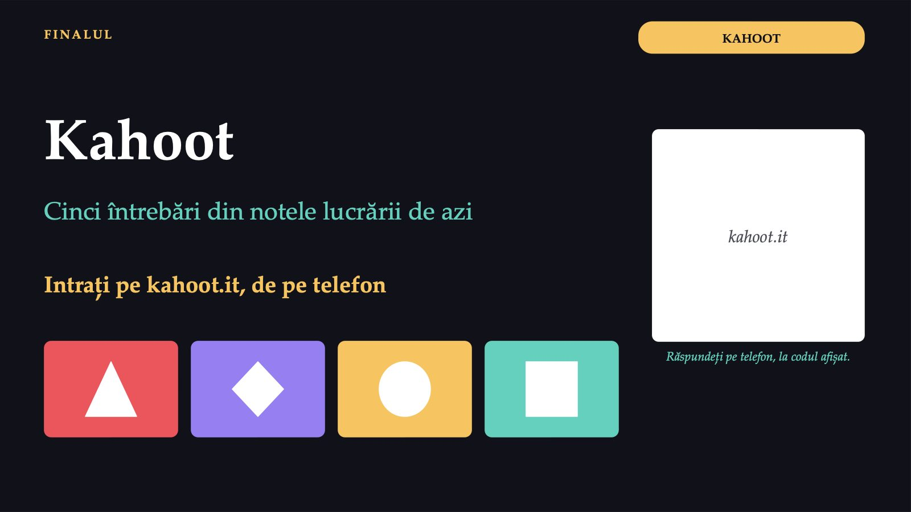
40 / 44Încheiem cu un joc de cinci întrebări din notele lucrării de azi, pe telefon.
Din note: țintele tratamentului, în doi pași
![DIN NOTE, DE CITIT Din note: țintele tratamentului, în doi pași Pasul 1 inițiază tratamentul, pasul 2 îl intensifică; după pasul 1, luarea în considerare a pasului 2 este obligatorie Sub 70 de ani, aparent sănătoși: pasul 1, tensiunea sistolică sub 140 mmHg, coborâtă până la 130 mmHg dacă este tolerată, LDL-colesterolul sub 2,6 mmol/l (100 mg/dl) Pasul 2: tensiunea sistolică sub 130 mmHg, dacă este tolerată; LDL-colesterolul sub 1,8 mmol/l (70 mg/dl) la riscul înalt și sub 1,4 mmol/l (55 mg/dl) la riscul foarte înalt, cu o reducere de cel puțin 50% La 70 de ani și peste: pasul 1, tensiunea sistolică sub 140 mmHg, dacă este tolerată, și același LDL-colesterol sub 2,6 mmol/l 2,6 mmol/l 1,8 mmol/l 1,4 mmol/l](diapozitive/LP07/041.jpg) 41 / 44
41 / 44Ghidul tratează factorii de risc în doi pași: pasul 1 inițiază tratamentul, pasul 2 îl intensifică. Țintele finale sunt o tensiune sistolică sub 130 mmHg și un LDL-colesterol stabilit după nivelul de risc. Pasul 2: LDL-colesterolul sub 1,8 mmol/l (70 mg/dl) la riscul înalt și sub 1,4 mmol/l (55 mg/dl) la riscul foarte înalt, cu o reducere de cel puțin 50%
Din note: când și cui se repetă evaluarea riscului
![DIN NOTE, DE CITIT Din note: când și cui se repetă evaluarea riscului Ghidul recomandă repetarea evaluării, de exemplu la 5 ani, deși nu există date empirice care să fixeze intervalul; mai devreme dacă riscul era aproape de pragul de tratament Clasa I de recomandare: evaluarea sistematică a riscului global la orice persoană cu un factor de risc vascular major (istoric familial de boală cardiovasculară prematură, hipercolesterolemie familială, fumat, hipertensiune, diabet, lipide crescute, obezitate, comorbidități care cresc riscul) Clasa IIb: bărbații de peste 40 de ani și femeile de peste 50 de ani sau după menopauză, fără factori de risc cunoscuți: evaluarea sistematică sau oportunistă poate fi luată în considerare Depistarea oportunistă a factorilor de risc crește detecția; evaluarea sistematică în populația generală fără factori de risc cunoscuți nu pare cost-eficace](diapozitive/LP07/042.jpg) 42 / 44
42 / 44Evaluarea riscului nu se face o singură dată. Ghidul recomandă repetarea ei, de exemplu la 5 ani, și evaluarea sistematică a riscului la orice persoană cu un factor de risc vascular major. evaluarea sistematică în populația generală fără factori de risc cunoscuți nu pare cost-eficace mai devreme dacă riscul era aproape de pragul de tratament Depistarea oportunistă a factorilor de risc crește detecția Clasa IIb: bărbații de peste 40 de ani și femeile de peste 50 de ani sau după menopauză, fără factori de risc cunoscuți: evaluarea sistematică sau oportunistă poate fi luată în considerare
Din note: sarcina și lăuzia
![DIN NOTE, DE CITIT Din note: sarcina și lăuzia 3–7 7–9 Luarea în evidență, care include și depistarea sarcinii: în primul trimestru Supravegherea, o dată pe lună: în lunile 3–7; de două ori pe lună: în lunile 7–9, inclusiv Lăuza: la externarea din maternitate și la 4 săptămâni de la naștere, la cabinet și la domiciliu Medicul de familie promovează alimentația exclusivă la sân până la 6 luni și continuarea ei până la cel puțin 12 luni; recomandă testarea gravidei pentru HIV, hepatita B și C și sifilis Investigațiile și tratamentele specifice sarcinii: de la luarea în evidență până la 4 săptămâni de la naștere Înainte de sarcină: evaluarea preconcepție (istoricul vaccinărilor pentru hepatita B, rubeolă și varicelă, acidul folic, testul Babeș-Papanicolau, consilierea pentru renunțarea la fumat, alcool și droguri)](diapozitive/LP07/043.jpg) 43 / 44
43 / 44Normele fixează calendarul consultațiilor medicului de familie pentru gravidă și lăuză. Urmărirea începe înaintea sarcinii, cu evaluarea preconcepție din consultațiile de planificare familială. Femeia însărcinată nu se evaluează cu diagrama SCORE2. Supravegherea, o dată pe lună: de două ori pe lună: în lunile 7–9, inclusiv recomandă testarea gravidei pentru HIV, hepatita B și C și sifilis Înainte de sarcină: evaluarea preconcepție (istoricul vaccinărilor pentru hepatita B, rubeolă și varicelă, acidul folic, testul Babeș-Papanicolau, consilierea pentru renunțarea la fumat, alcool și droguri)
Din note: consultațiile preventive ale copilului
![DIN NOTE, DE CITIT Din note: consultațiile preventive ale copilului Privesc creșterea și dezvoltarea, starea de nutriție și riscurile specifice vârstei și sexului 2 4 6 9 12 15 18 24 36 Nou-născutul: la externarea din maternitate și la 1 lună, la domiciliul copilului De la 2 la 36 de luni: la 2, 4, 6, 9, 12, 15, 18, 24 și 36 de luni De la 4 la 18 ani: o dată pe an Analizele: la 2–5 ani, screeningul anemiei și al rahitismului; la 6–9 ani, screeningul sindromului dismetabolic (indice de masă corporală crescut sau istoric de hipercolesterolemie familială); la 10–17 ani, același screening dismetabolic, screeningul bolilor cu transmitere sexuală după începerea vieții sexuale și, la fete, screeningul anemiei](diapozitive/LP07/044.jpg) 44 / 44
44 / 44Consultațiile preventive ale copilului de 0–18 ani privesc creșterea și dezvoltarea, starea de nutriție și riscurile specifice vârstei și sexului; calendarul lor este fixat de norme, iar analizele recomandate depind de vârstă. Analizele: la 10–17 ani, același screening dismetabolic, screeningul bolilor cu transmitere sexuală după începerea vieții sexuale și, la fete, screeningul anemiei
Săgeți sau spațiu: navigare · O: vedere de ansamblu · N: notele prezentatorului · F: ecran complet · Esc: închidere